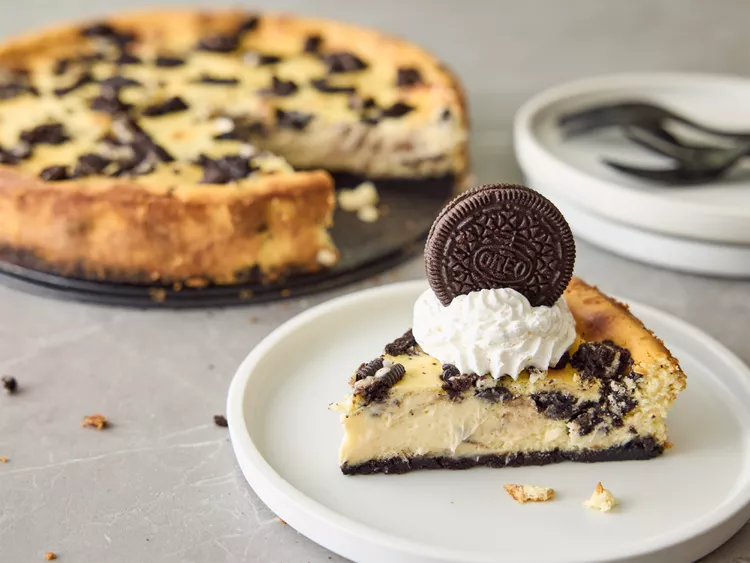

Oreo Cheesecake

Description
A smooth and rich cheesecake with some Oreos sprinkled in, giving it a nice cookies and creme flavor.
Ingredients
- 24 Oreo Cookies, divided
- 3 tbsps butter, melted
- 3 (8 oz) packages Philadelphia Cream Cheese, softened
- 3/4 cup sugar
- 1 tsp vanilla
- 3 large eggs
Steps
- Gather all ingredients. Preheat the oven to 350 degrees F (175 degrees C).
- Place 16 cookies in a resealable plastic bag. Flatten bag to remove excess air, then seal bag. Finely crush
cookies by rolling a rolling pin across the bag.
- Place crushed cookies in a bowl. Add melted butter; mix well.
- Press mixture firmly onto bottom of a 9-inch springform pan.
- Beat cream cheese, sugar, and vanilla in a large bowl with an electric mixer on medium speed until
well-blended.
- Beat in eggs, 1 at a time, until just blended.
- Chop remaining 8 cookies; gently stir 1/2 of the chopped cookies into cream cheese batter.
- Pour over prepared crust; sprinkle remaining chopped cookies on top.
- Bake in the preheated oven until center is just set, about 45 minutes.
- Refrigerate for 3 hours to overnight. Cut cheesecake into 12 equal pieces; store leftovers in the
refrigerator.
Return to the Home Page